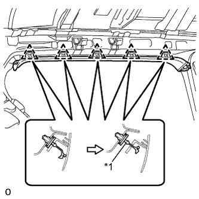
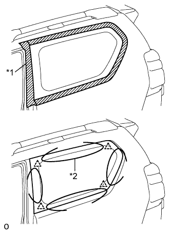
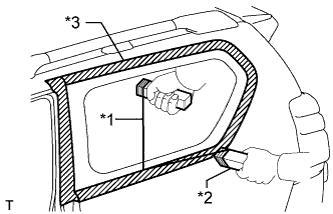
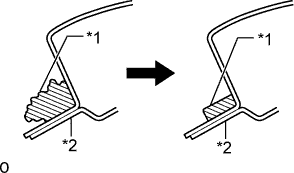

СТЕКЛО НЕОПУСКНОЕ (для 3-дверной модели) > СНЯТИЕ |
| 1. СНИМИТЕ ОБИВКУ КРЫШИ В СБОРЕ |
Снимите обивку крыши (Нажмите здесь).
| 2. СНИМИТЕ ОБЛИЦОВКУ ЛЕВОГО БОКОВОГО БРУСА КРЫШИ № 1 |
|  |
Освободите 5 фиксаторов.
Срежьте фиксатор A.
Снимите облицовку бокового бруса крыши.
Снимите фиксатор A с кузова автомобиля.
| *1 | Фиксатор A |
| 3. СНИМИТЕ ЛЕВОЕ НЕОПУСКНОЕ СТЕКЛО В СБОРЕ |
|  |
Из салона пропустите струнную проволоку между кузовом автомобиля и неопускным стеклом, как показано на рисунке.
| *1 | Защитная клейкая лента |
| *2 | Струнная проволока |
|  |
Привяжите к обоим концам проволоки предметы, заменяющие ручки (например, деревянные бруски).
Срежьте герметик, протянув струнную проволоку по контуру неопускного стекла.
| *1 | Струнная проволока |
| *2 | Деревянные бруски |
| *3 | Защитная клейкая лента |
Используя вакуумные присоски, снимите неопускное стекло.
| 4. ОЧИСТИТЕ ПОВЕРХНОСТЬ КУЗОВА АВТОМОБИЛЯ |
|  |
Очистите и сформируйте поверхность соприкосновения кузова.
| *1 | Герметик |
| *2 | Кузов автомобиля |
С помощью ножа срежьте все неровные участки герметика с поверхности контакта на кузове автомобиля, как показано на рисунке.
Очистите поверхность контакта на кузове техническим бензином.